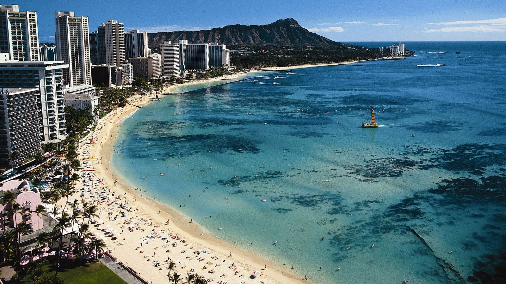

J'avais dix ans.
Le dimanche, vers 18 heures, le week-end touchait à sa fin. Le cartable attendait dans l'entrée, l'école reprenait le lendemain. Mais avant, il y avait un dernier rendez-vous sur M6 : Agence Acapulco.
Avec un ami d'école, nous étions des fans absolus. Le lundi matin, dans la cour, on refaisait les missions de la veille. Les agents secrets, le soleil du Mexique, les poursuites au bord de l'eau, les explosions : tout nous semblait plus grand, plus chaud, plus libre que notre dimanche soir.
Il faut l'avouer aussi : nous trouvions les actrices magnifiques. À dix ans, on ne savait pas trop pourquoi, mais on ne les quittait pas des yeux.
Il y avait le générique, qu'on connaissait par cœur. Les cascades. Et puis Tommy, le membre de l'équipe qui pratiquait les arts martiaux, et grâce à qui chaque épisode finissait en bagarre spectaculaire. Avec lui, l'action était toujours au rendez-vous.
Ce soir, on prend le soleil. Direction Acapulco.

Acapulco H.E.A.T. : l'équipe au complet
Agence Acapulco.
Le titre original est Acapulco H.E.A.T., pour Hemisphere Emergency Action Team. La série est créée par Max et Micheline Keller, tournée au Mexique et diffusée aux États-Unis en syndication, c'est-à-dire vendue directement aux chaînes locales. Elle compte deux saisons, la première en 1993-1994, la seconde en 1996-1997, pour une cinquantaine d'épisodes au total.
Le principe : une équipe d'agents secrets d'élite, basée dans une villa au bord de la mer à Acapulco, chargée de déjouer complots terroristes, trafics d'armes et menaces internationales. Sous couverture, ils vivent comme des mannequins et des photographes. En mission, ils deviennent des combattants redoutables.
À la tête de l'équipe, Catherine Oxenberg, connue pour son rôle dans Dynastie. À ses côtés, Brendan Kelly en agent séducteur, et toute une équipe de spécialistes, dont Tommy, expert en arts martiaux, qui règle souvent les problèmes à mains nues.
Plages ensoleillées, maillots de bain, voitures de sport, fusillades et cascades : Agence Acapulco assume pleinement son programme. C'est une série d'action légère et spectaculaire, à mi-chemin entre Alerte à Malibu et James Bond.
Au début des années 90, la télévision américaine découvre une nouvelle mine d'or : la syndication. Plutôt que de passer par les grands réseaux nationaux, des producteurs indépendants vendent leurs séries directement aux chaînes locales et aux diffuseurs étrangers. Le modèle a fait ses preuves avec Alerte à Malibu, relancée de cette manière en 1991 après son arrêt sur NBC, et devenue un phénomène mondial.
La recette est simple : de l'action, du soleil, des plages, et une distribution séduisante. Elle se vend partout, en Europe comme ailleurs, et ne demande pas de grands budgets. Agence Acapulco naît de cette logique.
La série est lancée par Max et Micheline Keller, producteurs indépendants. Leur idée : mélanger l'espionnage à la James Bond et l'insouciance des séries de plage. Une équipe d'agents secrets, une villa au bord de l'océan, des missions aux quatre coins du monde, et des couvertures de mannequins et de photographes qui justifient tous les décors de rêve.
Pour porter la série, la production mise sur un nom connu : Catherine Oxenberg, révélée dans Dynastie, le grand feuilleton des années 80. Autour d'elle, une équipe de jeunes acteurs au physique avantageux, et des spécialistes des scènes d'action, notamment pour les combats d'arts martiaux.
Le tournage se déroule au Mexique, dans des décors naturels de bord de mer. Les budgets sont serrés, les épisodes s'enchaînent vite, et les cascades sont tournées avec les moyens du bord : explosions, poursuites en bateau, combats sur la plage.
La première saison est diffusée en 1993-1994. Puis la série s'interrompt pendant près de deux ans, avant de revenir en 1996 avec une distribution en partie renouvelée, pour une seconde et dernière saison.
En France, M6 la programme le dimanche en fin d'après-midi, juste avant le retour de la semaine. Pour toute une génération d'écoliers, elle devient le dernier rendez-vous du week-end.
Le glamour des années 90
Acapulco, au bord du Pacifique.
Dans une luxueuse villa face à l'océan, une équipe de jeunes gens semble mener la belle vie. Officiellement, ce sont des mannequins, des photographes et des organisateurs de séances de mode. Ils passent leurs journées entre la plage, la piscine et les fêtes.
En réalité, ils forment H.E.A.T., une unité secrète d'intervention d'élite. Leur mission : protéger le continent américain des menaces que les gouvernements ne peuvent pas affronter ouvertement. Terroristes, trafiquants d'armes, réseaux criminels, dictateurs en exil : rien ne leur échappe.
À la tête de l'équipe, Ashley Hunter-Coddington, une ancienne agente des services secrets, élégante, intelligente et redoutable. À ses côtés, Mike Savage, un ancien agent de la CIA au charme ravageur. Et autour d'eux, des spécialistes de l'informatique, des explosifs, du combat, dont Tommy, expert en arts martiaux, capable de mettre au tapis une dizaine d'adversaires sans perdre son sourire.
Leurs ordres arrivent d'un mystérieux chef, toujours dans l'ombre. Chaque épisode les lance sur une nouvelle mission : infiltrer une soirée de milliardaires, protéger un témoin, déjouer un attentat, poursuivre un hors-bord à travers la baie.
Le soleil, le sable, les maillots de bain. Et derrière les sourires, des agents prêts à tout pour sauver le monde, avant le coucher du soleil.
Agence Acapulco ne cache rien de ses intentions. C'est une série qui assume d'être un divertissement pur : du soleil, de l'action, des personnages séduisants, et une mission à boucler en quarante-cinq minutes. Rien de plus, rien de moins.
Sa formule repose sur un mélange de deux genres très populaires au début des années 90. D'un côté, l'espionnage à la James Bond : les gadgets, les méchants mégalomanes, les infiltrations dans le grand monde. De l'autre, la série de plage façon Alerte à Malibu : les décors paradisiaques, les maillots de bain et la vie au soleil. Le résultat est une sorte de carte postale armée, où chaque mission ressemble à des vacances qui tournent mal.
Sa vraie force, c'est l'action. Malgré des budgets modestes, la série multiplie les cascades : poursuites en hors-bord, explosions, chutes, combats sur la plage. Les combats d'arts martiaux, portés par le personnage de Tommy, apportent une énergie particulière. Pour les enfants de l'époque, c'étaient les meilleurs moments de l'épisode.
Les personnages, eux, restent des archétypes : la cheffe élégante, l'agent charmeur, l'expert en informatique, le spécialiste du combat. Ils ne sont pas très approfondis, mais l'équipe fonctionne comme une petite famille, et leur complicité donne au spectateur l'envie de les retrouver chaque semaine.
Il faut aussi le reconnaître : la série mise beaucoup sur le physique de ses acteurs et de ses actrices. Les plans en maillot de bain font partie du programme, et ce regard appuyé appartient clairement à son époque. Revue aujourd'hui, cette insistance peut faire sourire, ou agacer.
Enfin, les scénarios sont simples, parfois répétitifs, et les dialogues rarement inoubliables. La série ne cherche jamais le réalisme ni la profondeur.
Mais c'est justement ce qui fait son charme. Agence Acapulco est une série de fin de week-end : légère, ensoleillée, spectaculaire. Une heure d'évasion avant le retour au quotidien.

Le soleil, la plage et l'océan Pacifique
Agence Acapulco s'est effacée aussi vite qu'un coucher de soleil sur la plage.
D'abord, elle a toujours vécu dans l'ombre d'Alerte à Malibu. Les deux séries partageaient les mêmes ingrédients : le soleil, la plage, les maillots de bain. Mais Alerte à Malibu avait David Hasselhoff, Pamela Anderson, un succès planétaire et des années d'antenne. Face à ce géant, Agence Acapulco restait une petite sœur discrète.
Ensuite, sa diffusion a été chaotique. Une première saison, une longue pause de près de deux ans, puis un retour avec une distribution en partie renouvelée. Le public a eu du mal à suivre, et la série s'est arrêtée définitivement en 1997, sans vraie conclusion.
Son statut de série de syndication a aussi joué contre elle. Sans le soutien d'un grand réseau américain, elle n'a jamais bénéficié de la même visibilité ni de la même promotion que les séries des grandes chaînes. Elle est restée une série de seconde partie de programme, rediffusée ici ou là, puis oubliée.
Ses acteurs, enfin, n'ont pas connu de grande carrière au cinéma. Aucun visage n'est devenu une star capable de raviver son souvenir. Catherine Oxenberg restait avant tout associée à Dynastie.
Et puis, le regard du public a changé. Ses intrigues simples, ses plans insistants sur les corps et son humour appuyé ont vite paru datés. Les séries d'action des années 2000, plus sombres et plus réalistes, ont rendu ce style ensoleillé et insouciant presque anachronique.
Agence Acapulco n'a pas disparu des mémoires de ceux qui la regardaient. Elle reste attachée à un moment bien précis : le dimanche, à 18 heures, quand le week-end s'achevait sur M6.
Parce que c'est une capsule de soleil tout droit sortie des années 90, et qu'elle n'a rien perdu de sa bonne humeur.
Revoir Agence Acapulco, c'est retrouver une télévision insouciante, qui ne cherchait ni à faire réfléchir ni à choquer. Juste à distraire. Une mission, une plage, quelques bagarres, et le générique de fin. Un plaisir simple, presque reposant.
Parce que l'action reste efficace. Malgré ses petits moyens, la série offre des cascades généreuses, des poursuites en bateau et des combats d'arts martiaux qui fonctionnent encore. Les scènes de Tommy, en particulier, gardent une vraie énergie.
Parce que ses décors sont une invitation au voyage. La baie, les villas, les plages, la lumière du Mexique : chaque épisode ressemble à une parenthèse de vacances.
Parce qu'elle est le témoin d'une époque de la télévision. Les années 90, la syndication, les séries d'action de plage, les génériques qu'on chantait par cœur : Agence Acapulco est un concentré de cette période.
Et parce que certaines séries se regardent mieux à deux. Comme le dimanche à 18 heures, avec un ami d'école, en refaisant les missions dans la cour le lendemain. La revoir aujourd'hui, c'est retrouver ce moment-là : la fin du week-end, le soleil à l'écran, et l'école qui pouvait bien attendre encore une heure.
Certaines séries marquent par leur génie. D'autres par le moment où on les regardait.
Agence Acapulco, pour moi, c'était le dimanche à 18 heures sur M6. J'avais dix ans. Le week-end touchait à sa fin, l'école reprenait le lendemain, mais pendant une heure, il y avait encore le soleil, la plage et les missions de l'équipe H.E.A.T. Avec un ami d'école, on ne manquait aucun épisode. Le lundi matin, dans la cour, on revivait les combats de Tommy et les cascades de la veille.
Ce n'était pas une grande série. Les intrigues étaient simples, les dialogues oubliables, et elle a disparu presque sans bruit. Mais pour deux gamins de dix ans, c'était l'aventure, le soleil et la liberté, juste avant le retour du cartable.
Aujourd'hui, en réentendant son générique, je retrouve exactement cette sensation : la fin du week-end, la lumière du Mexique sur l'écran, et l'envie que le dimanche ne se termine jamais.
La cassette est dans le lecteur. On rembobine.
Titre original
Acapulco H.E.A.T.
Pays
États-Unis
Genre
Action / Espionnage
Diffusion
Syndication, 1993–1997 (2 saisons)
Créateurs
Max & Micheline Keller
Tournage
Mexique
En France
M6, le dimanche à 18 h
Fil conducteur
Séries TV cultes — EP. 06
SOMEDAY — SÉRIES EP. 06